<div class="row">
  <div class="col-md-8 col-md-offset-2">
    <h2>Getting Started with a VPS</h2>

<p>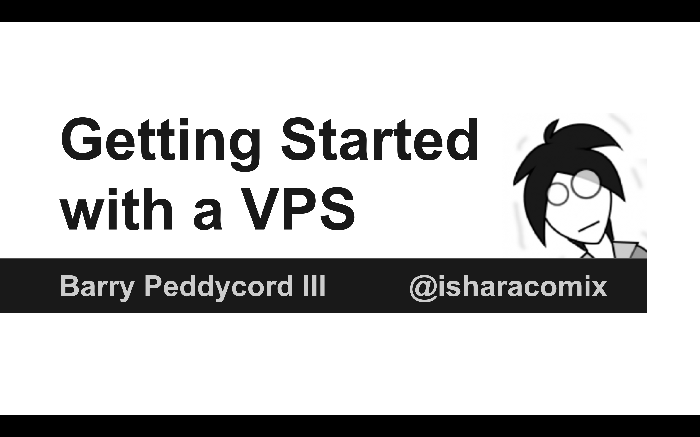</p>
<p>Thanks for visiting the extended notes for my talk on <strong>Getting Started
   with a VPS</strong>! The target audience for this presentation is someone
   who is just getting started with Linux, but it might be useful for a desktop
   power user who wants to get their feet wet in the world of server administration.
   It's a very light look at setting up a server, but once you've gotten past
   that barrier, there's a whole new world ahead!</p>

<p>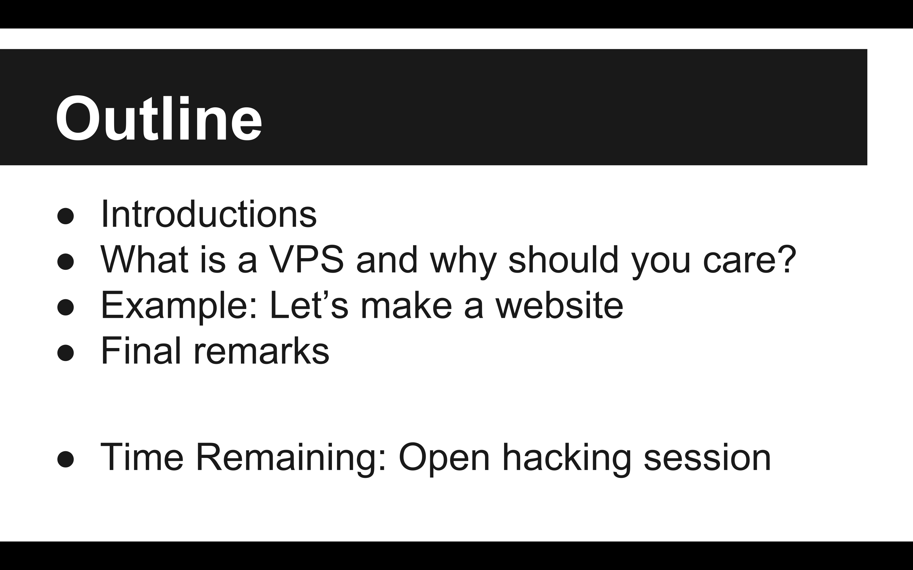</p>

<p>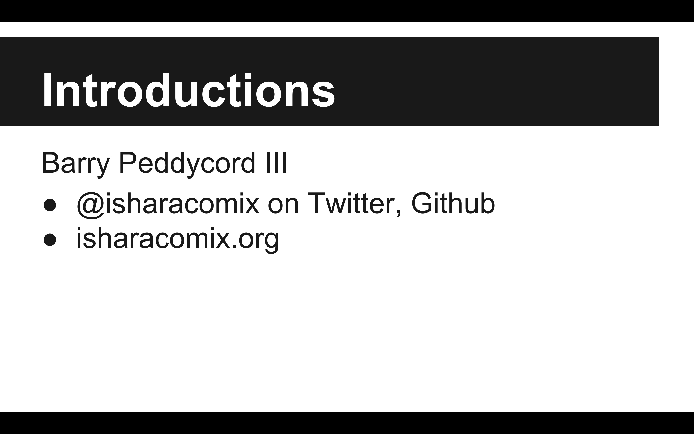</p>

<p>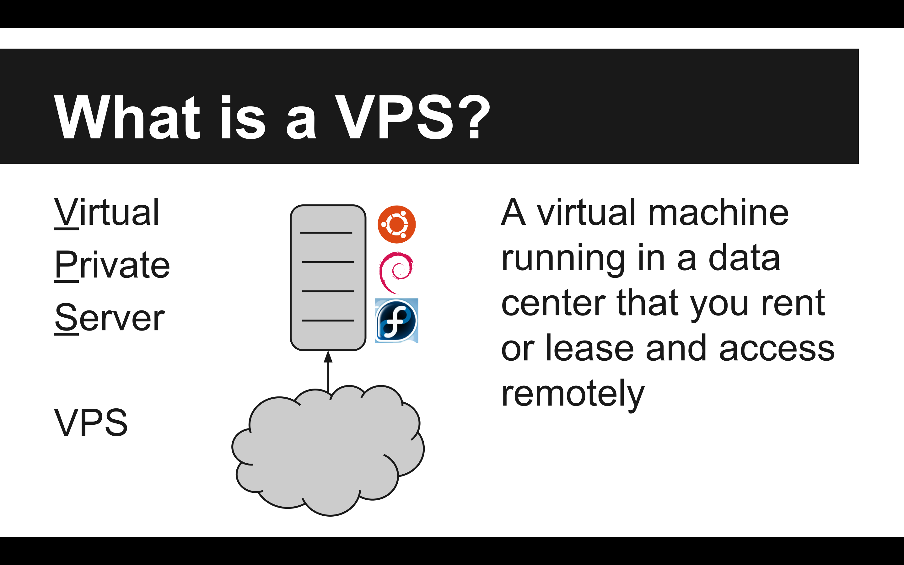</p>

<p>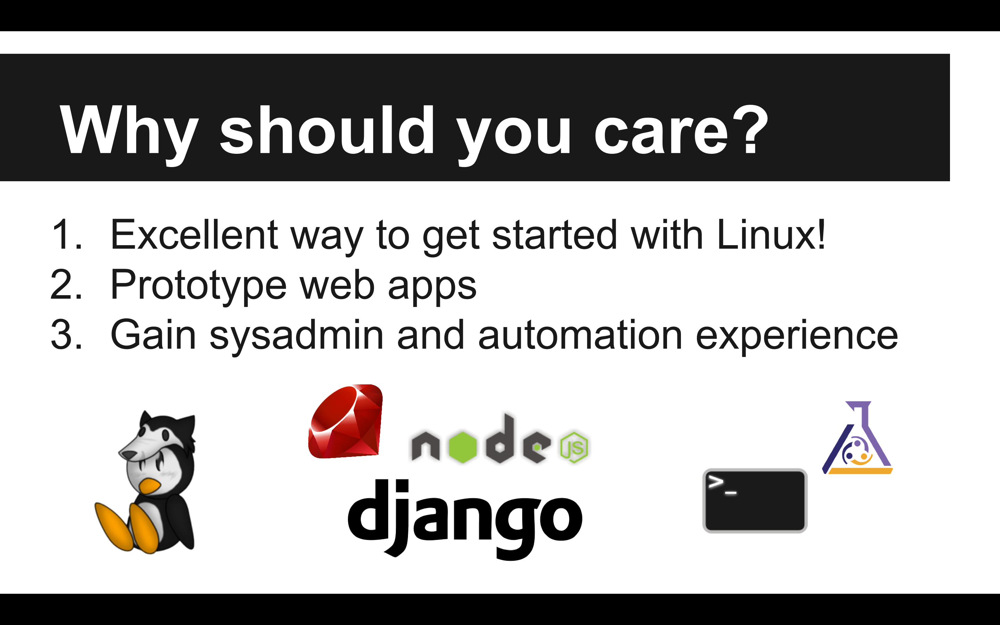</p>
<p>Historically, the way to get someone to try Linux has been the installfest,
   where you give the new user a LiveCD and help them wipe or dual-boot their
   machine with your favorite Linux distribution. This is often a very frustrating
   time for new users since hardware incompatibilities and installation mistakes
   can leave them with a broken system. For this reason, I propose the VPS as an
   alternative way of introducing folks to Linux.
</p>
<p>First of all, a lot of Linux's utility is in its capacity as a server. While the
   desktop has made tremendous steps forward in usability, graphics and wireless
   issues, as well as the very different suite of software can serve as a
   stumbling block for newbies who are trying to adjust from one desktop metaphor
   to another. On the other hand, with no prior frame of reference, the Linux
   server and its command line interface expose a completely new environment.
   While the environment may be cryptic, it is also very standardized, meaning
   that outdated tutorials that users are likely to find in their searches are
   more likely to be applicable.
</p>
<p>For people who want to run a website, especially rich web apps like
   Etherpad or a Wiki, a VPS is a great exercise in server administration.
</p>

<p>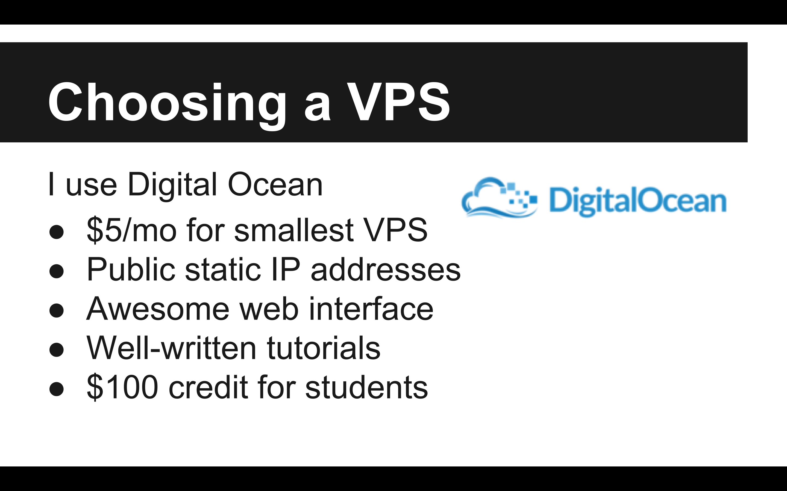</p>
<p>I've been using Digital Ocean to run a server since January of 2014. Since
   launching the server, I've used it for a number of personal projects. The
   very first project was a <a href="https://github.com/dtinth/ttycast">Node.js
   application</a> that I used to stream my local terminal to a terminal emulator
   on my home page. I've also used it to host a MUD, a Wiki, and my IRC bouncer.
</p>

<p>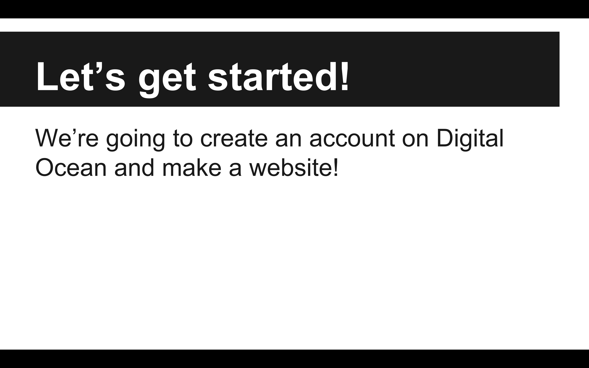</p>
<p>If you would like to try out Digital Ocean, you can
   <a href="https://www.digitalocean.com/?refcode=4ec898acbe2a">create an
   account</a> and get a free $10 credit to get started.
</p>

<p>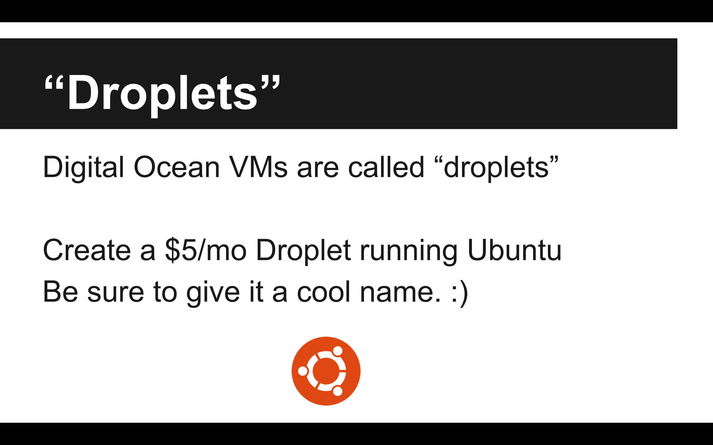</p>
<p>There are a lot of fun options you can choose from when spinning up your
   server, including IPv6 support and private networking. The private networking
   is particularly cool since it lets you play around with Layer 3 networking
   between your own virtual machines!
</p>
<p>One of the most fun parts of running servers is coming up with a naming scheme.
   My droplet is named <em>alexis</em> after the character in <em>Ishara Comix</em>.
   If I ever get more servers, I'd probably name them after the rest of the cast:
   <em>allen</em>, <em>liana</em>, <em>ramen</em>, and <em>ooka</em>.
</p>

<p>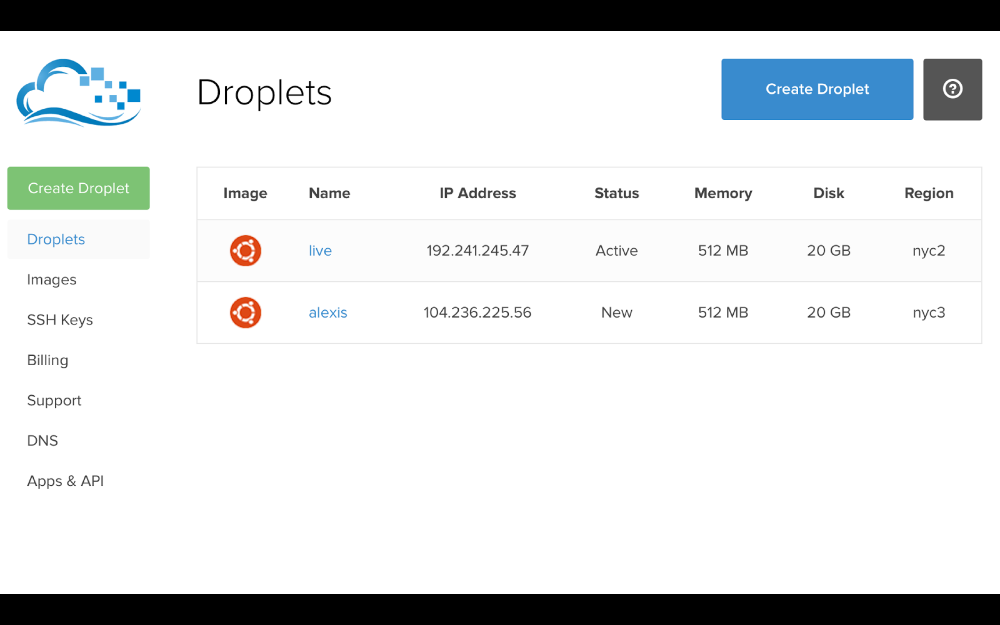</p>
<p>There's something magical about the Digital Ocean interface. It just makes
   you want to spin up hundreds of droplets, doesn't it?
</p>

<p>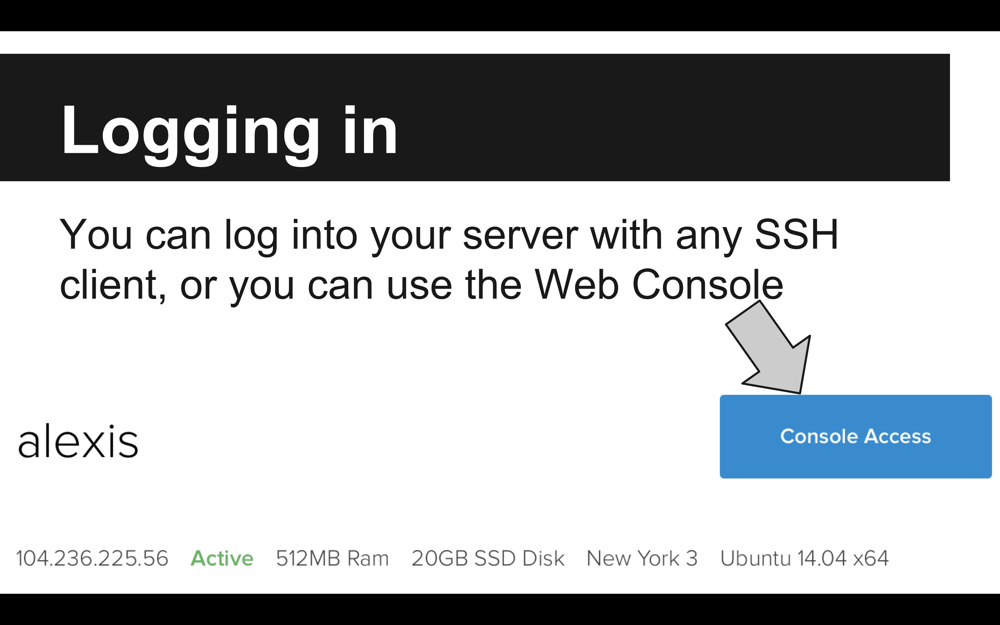</p>
<p>The web console is new! I didn't even know it existed when I got started!
   It's very helpful for the Windows user that isn't familiar with using a
   fully-featured SSH client, even if it is a little on the sluggish side.
</p>

<p>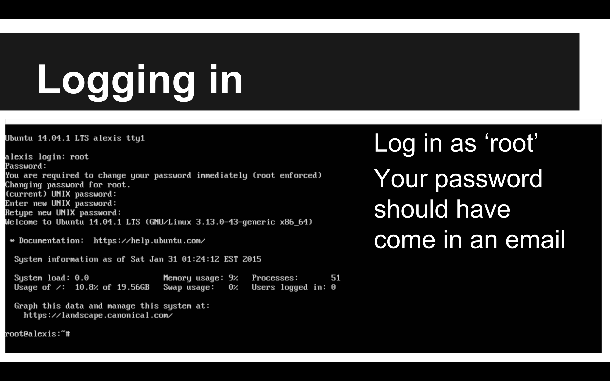</p>
<p>Ideally, you wouldn't be logging in as root - you can use the adduser command
to create a new user with administrator privileges.

<pre>
  # sudo adduser ishara
  # sudo adduser ishara sudo
</pre>

As your new user, you can go into root mode using <code>sudo su</code>, preventing
you from needing to log in as the root user directly.
</p>

<p>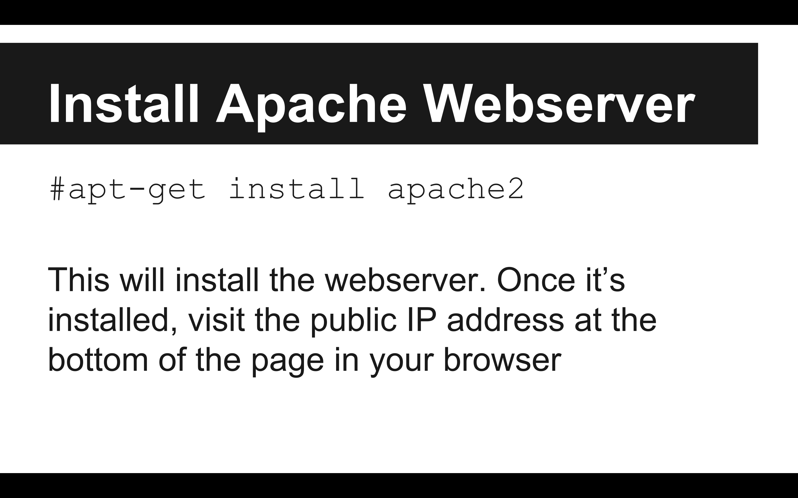</p>
<p>I could have used any demo here, but making a website is probably the most
   useful for a non-technical attendee. There are lots of cool things we could
   do, such as setting up a <a href="https://www.digitalocean.com/community/tutorials/a-basic-mysql-tutorial">database</a>,
   an <a href="https://www.digitalocean.com/community/tutorials/how-to-install-znc-an-irc-bouncer-on-an-ubuntu-vps">IRC bouncer</a>,
   or even a <a href="http://www.pennmush.org/">MUD</a>. Other worthwhile
   projects include mapping a custom domain name to your server and setting up
   virtual hosts.
</p>
<p>The awesome part about this is that each project teaches you a lot more than
   just which <code>apt-get</code> command to run. You have to learn how to
   configure and troubleshoot your installations. You learn where configuration
   files usually go and how to look at the logs when things go wrong. You learn
   the conventions of system services. But most importantly, you learn how to
   learn. You have to be flexible and patient to be a system administrator,
   but it pays off.
</p>

<p>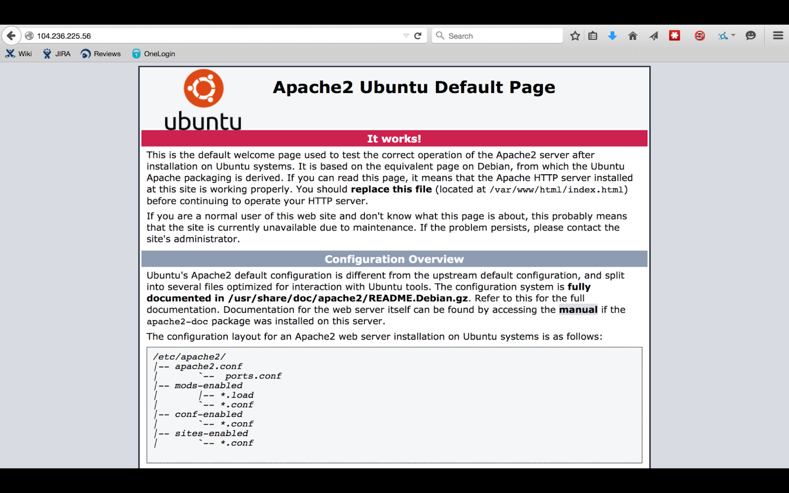</p>

<p>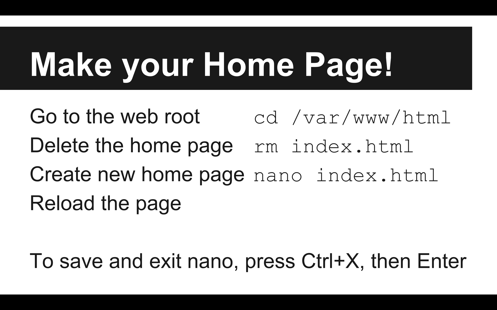</p>
<p>Don't even get me started on this emacs versus vi nonsense.</p>

<p>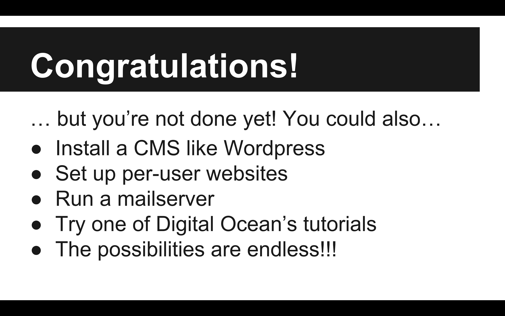</p>
<p>Running a server is a continuous exercise in self-improvement. Imagine sitting
   in an interview and showing your interviewer your website, and then explaining
   all of the technology underneath. How the security is set up, what is installed,
   whether or not you're using automation tools like Puppet or Ansible to keep
   your server running. It's not enough just to get it up and running. You have
   to keep playing with it long enough that you break it a few times. That's
   where you pick up the skills that will take you places.
</p>

<p>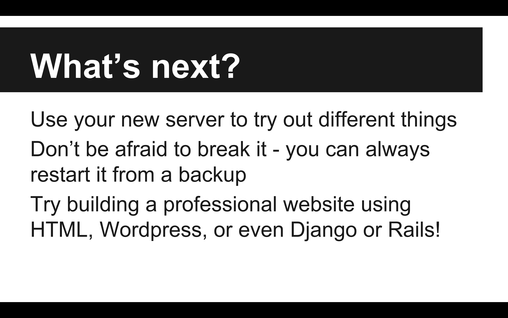</p>

<p>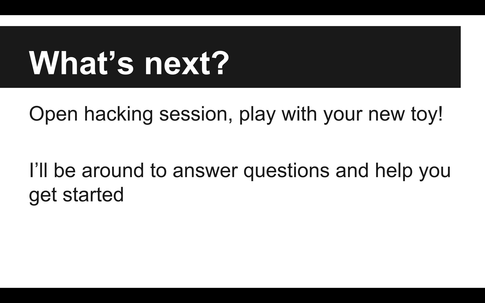</p>
<p>If you're only going to use your VPS occasionally, you can make a snapshot of your
   VM for free and turn off your server until you need to use it again. You're billed
   by the hour, even if your droplet is turned off, so if you need to stretch your money,
   this is a good way to do so.
</p>

<p>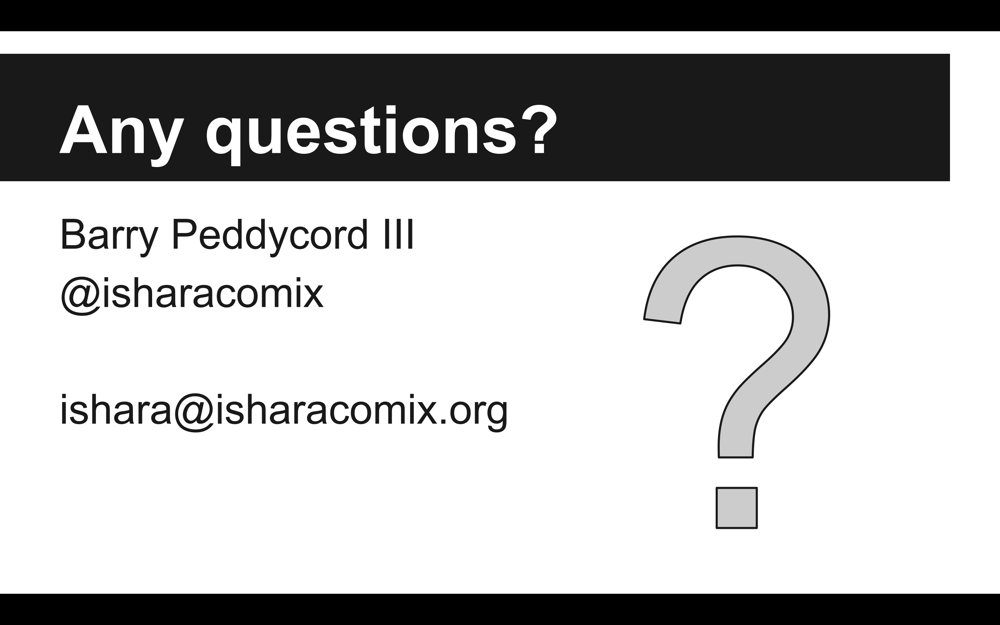</p>
<p>If you have any questions, feel free to reach out to me via Twitter or by
   E-mail.</p>


  </div>
</div>
